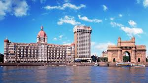
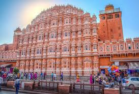
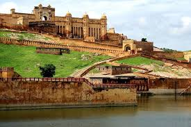
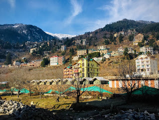
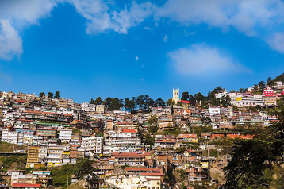
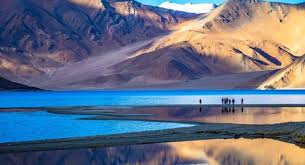

AGRA

TAJ MAHAL
So overwhelming is the exquisite beauty and presence of the marble mausoleum that centuries later today, even the very land where it has been located - Agra - has been immortalised as the City of the Taj. The older city of Agra has impressively retained much of its resplendent history captivating every visitor with fond memories to take back home.
MUMBAI |
|  |
|---|
TAJ HOTELMumbai, the city that never sleeps! The most modern city in India, it captures the spirit of the changing pace set by liberalization and modernisation . The insight into the history of this glorious city is the answer to its inspiriting beginnings and eminence around the world. |
JAIPUR |
|  |
|---|
HAWA MAHALHawa Mahal (English translation: "The Palace of Winds" or "The Palace of Breeze") is a palace in Jaipur, India. Made with the red and pink sandstone, the palace sits on the edge of the City Palace, Jaipur, and extends to the Zenana, or women's chambers. |
RAJASTHAN |
|  |
|---|
AMBER PALACEThe current Amer Palace was created in the late 16th century, as a larger palace to the already existing home of the rulers. The older palace, known as Kadimi Mahal (Persian for ancient) is known to be the oldest surviving palace in India. This ancient palace sits in the valley behind the Amer Palace. |
HIMACHAL PRADESH |
|  |
|---|
MANALIManali is a high-altitude Himalayan resort town in India’s northern Himachal Pradesh state. It has a reputation as a backpacking center and honeymoon destination. Set on the Beas River, it’s a gateway for skiing in the Solang Valley and trekking in Parvati Valley. It's also a jumping-off point for paragliding, rafting and mountaineering in the Pir Panjal mountains, home to 4,000m-high Rohtang Pass. |
HIMACHAL PRADESH |
|  |
|---|
SHIMLAShimla is the capital of the northern Indian state of Himachal Pradesh, in the Himalayan foothills. Once the summer capital of British India, it remains the terminus of the narrow-gauge Kalka-Shimla Railway, completed in 1903. It’s also known for the handicraft shops that line The Mall, a pedestrian avenue, as well as the Lakkar Bazaar, a market specializing in wooden toys and crafts. |
JAMMU AND KASHMIR |
|  |
|---|
LADAKHLeh Ladakh Tourism. A land like no other with a superabundance of attractions to visit and fabulous landscapes, amazing people and culture, Ladakh is truly a heaven on Earth. ... Ladakh is an adventure playground for climbing, jeeps tours, rafting and high-altitude trekking. |